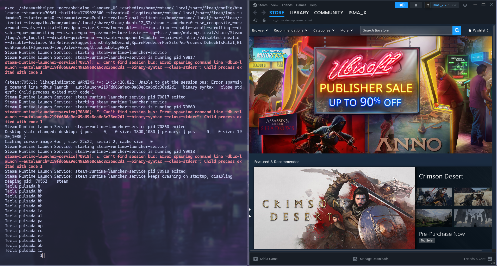
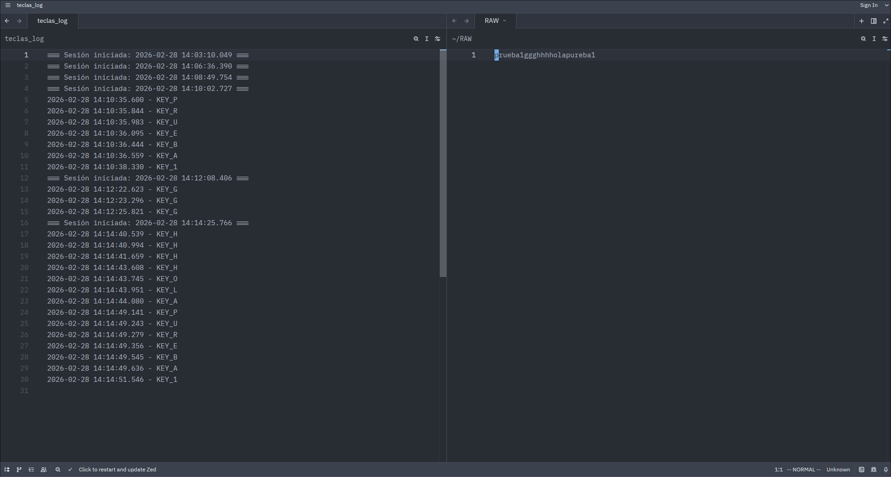

Práctica 2: Análisis de Riesgos y Mitigación
Estudio detallado sobre malware, ingeniería social y seguridad física.
En las siguientes capturas se observa el funcionamiento de un ataque combinado: mientras el ejecutable falso inicia la aplicación legítima de Steam para no levantar sospechas, un keylogger en segundo plano captura silenciosamente todas las pulsaciones de teclado.


a. Señales de ejecutables sospechosos
- Comportamiento anómalo de la red: Intentos de establecer conexiones externas inesperadas a servidores desconocidos o puertos inusuales.
- Consumo de recursos inusual: Incremento inexplicable en el uso de CPU, disco o memoria, especialmente en aplicaciones que deberían ser ligeras.
b. Medidas técnicas de prevención
- Control de Aplicaciones (Whitelisting): Implementación de políticas como AppLocker para impedir la ejecución de binarios no firmados.
- Principio de Menor Privilegio: Limitar permisos de administrador para evitar que el software instale persistencia en el sistema.
- Segmentación de red: Limitar la comunicación con el exterior para evitar la exfiltración de datos capturados.
c. El papel de la ingeniería social
Es el "puente" que hace efectivo al malware utilizando:
Pretexto: Disfrazar archivos como informes legítimos para ganar confianza.
Urgencia: Incitar a actuar sin pensar ante problemas inexistentes.
Enmascaramiento: Uso de iconos y nombres comunes para reducir la fricción cognitiva.
d. Riesgo del acceso físico
El acceso físico invalida gran parte de las defensas lógicas al permitir:
- Puenteo de protecciones: Inicio desde unidades externas (Live USB) ignorando políticas de grupo.
- Extracción de claves: Uso de hardware como Keyloggers físicos o Rubber Ducky, invisibles para el SO.